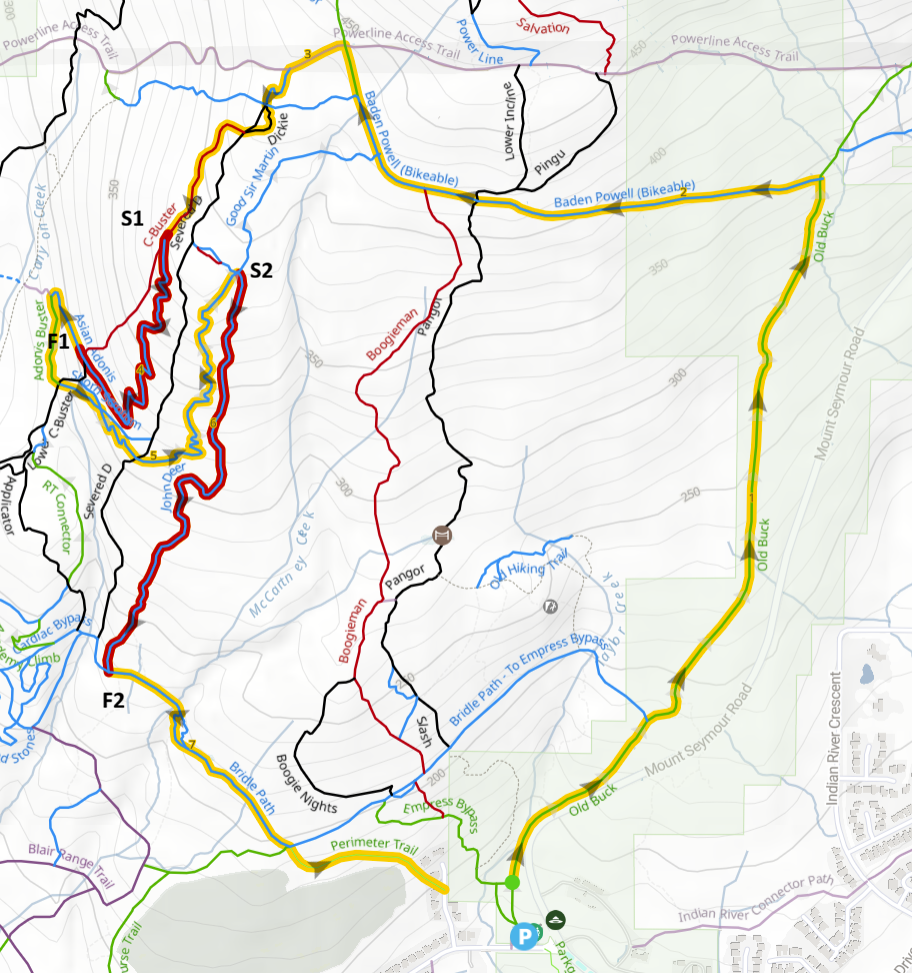
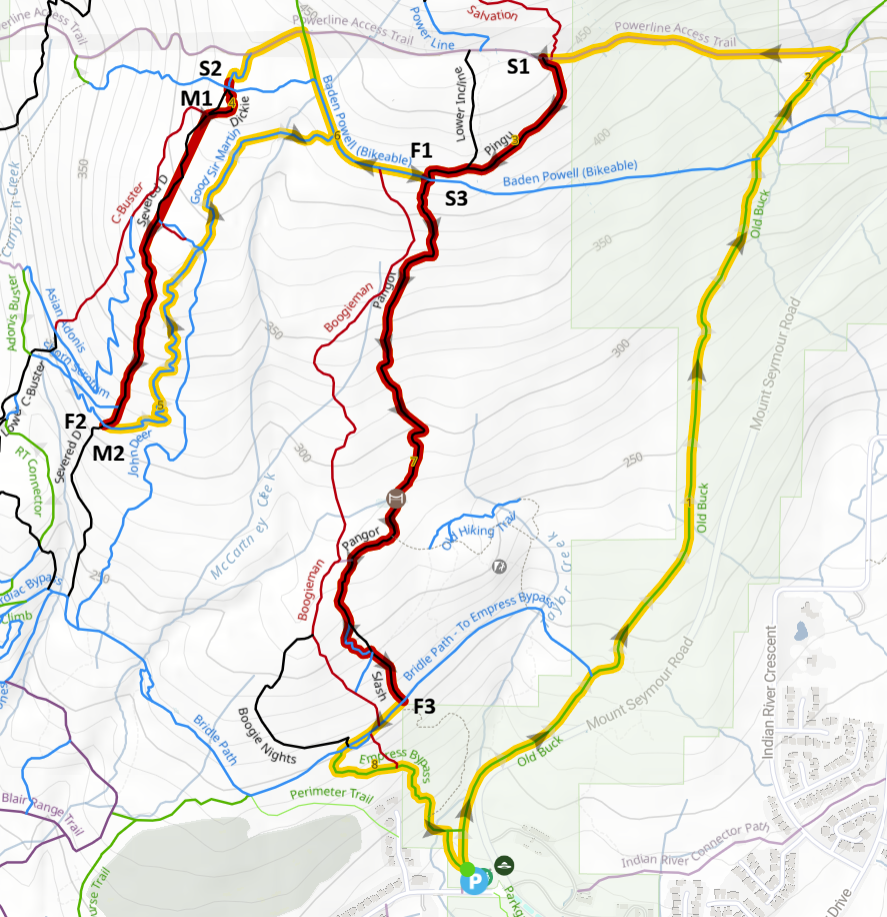

Race 2 - Seymour Enduro
Date: Wednesday, April 15
Location: Mt. Seymour / Old Buck Trailhead
Registration: Parkgate Park (north end)
Parking: Parkgate Park, Anne McDonald Way, Old Buck Parking Lot
Race Details
This is an enduro-style race. Riders will climb to each stage and race timed downhill sections. Your total time across all stages determines your result. Transfer climbs between stages are not timed.
Riders are responsible for knowing their course, following the correct route, and moving safely between stages.
Race Day Schedule
- 2:00 pm – Registration / chip pickup opens
- 2:45 pm – Rider briefing
- 3:00 pm – Riders released in waves
- Order: Jr / Sr riders first, then Bant / Juv riders
Riders should arrive early, check in, and be ready to go with all required gear.
Coaches - Please ride with your team, a coach per group (8/9 and 10/11/12) to help with crowd control and rider behaviour.
Important Race Notes
- It is the responsibility of each rider to know their race route.
- Be respectful of other trail users at all times.
- Stay on designated race and transfer routes only.
- Ride in control and within your ability.
- Helmets worn at ALL times, NO ear buds/headphones
- All timing chips must be returned after the race.
Course Maps
Grade 8/9 (Bant/Juv) Course
Grade 10/11/12 (Jr/Sr) Course
Marshal Map


Marshal Sign Up
Marshals are an important part of race day. You will help maintain trail access for public users, let them know a race is in progress, and help direct riders along the course.
In an enduro race, Marshals are key to help make the event run smoothly and appreciate your help for this event.
Starting Marshals
- Start racers 30 seconds apart within a team
- Wait 45 seconds between teams
- Gather timing equipment at the top of the stage (wire and cellphone) along with any signage
- Sweep the course one last time after all riders have gone through.
Finish Marshals
- Help manage riders at the end of a stage and point them to the next stage/exit
- Gather timing equipment (cable) and signage
- Confirm sweep with Starting Marshal
Marshals (M1 and M2)
- Help direct riders at tricky intersections
- Ensure riders climbing back up the trail cross trails safely
- Help public users access trails safely if crossing racing lines
What to bring
- Backpack - to carry gear and signage and small first aid kit
- Bike to access trails (we'll shuttle you up to access upper trails)
Sign Up to Marshal
Results
Stage results and overall results will be posted on Zone4.ca.